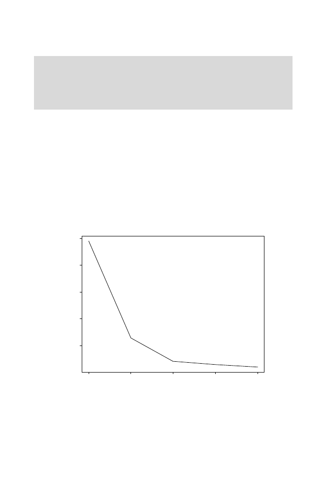

10.5
K
-means
285
Gorilla
now forms a cluster by itself. In the other two clusters, all members
of genus
Homo
are indicated by H. We can see that all but one of these form
a separate cluster. On the basis of these characters,
H. habilis
is clustered
with
Australopithecus
species. (Analysis using many characters has led some
anthropologists to reclassify
H. habilis
as
A. habilis
.)
How many clusters should there be? This number is, to some extent, ar-
bitrary. If we increase
k
until it equals the number of OTUs, it is possible to
make the within-ss zero! But then we are back where we started: a set of
m
unclustered OTUs. One way to decide the appropriate number of clusters is
to repeat the process for several different values of
k
and plot the sum
S
of
within-ss values (for all clusters) as a function of
k
. As
k
increases, we will
observe that
S
decreases. It is probably not prudent to increase
k
beyond the
point at which
S
is showing large decreases. This is illustrated in Fig. 10.8 for
the scaled hominoid data. Note that increasing
k
from 2 to 3 produced a large
drop in
S
, while going from
k
= 3 to
k
= 4 produced a much more modest
decrease by splitting off a single-member group. We conclude that
k
= 3 is an
appropriate choice, consistent with the appearance of the data in Fig. 10.7.
2
3
4
5
6
24
68
1
0
Within sums of squares
Number of clusters, k
Fig. 10.8.
Response of within-cluster sums of squares (summed over all clusters)
to increasing values of
k
. Data are from clustering of hominoids (results for
k
= 3
shown in Fig. 10.7). Substantial reduction in within-ss occurs when
k
is increased
from 2 to 3. Further reductions in within-ss result for values of
k
larger than 3, but
improvements are comparatively small, and additional single-member clusters are
produced.